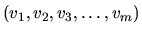
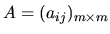
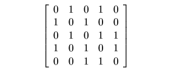
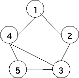
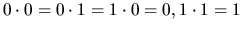

| All Walks of length n from the first node |
A computer network can be represented as a graph. Let G = (V, E) be an
undirected graph, V =

represents all nodes,
where m is the number of nodes, and E represents all edges. The first
node is v1 and the last node is vm . The number of edges is k. Define
the adjacency matrix

where
An example of the adjacency matrix and its corresponding graph are as follows:
 
Calculate
and use the Boolean operations where 0+0 = 0, 0+1=1+0=1, 1+1=1, and . The entry in row i and column j of An is 1 if and only if at least there exists a walk of length n between the i-th and j-th nodes of V. In other words, the distinct walks of length n between the i-th and j-th nodes of V may be more than one. Note that the node in the paths can be repetitive.
The following example shows the walks of length 2.
Write programs to do above calculation and print out all distinct walks of
length n. (In this problem we let the maximum walks of length n be 5 and
the maximum number of nodes be 10.)
Separate the output of the different cases by a blank line.
5 2 0 1 0 1 0 1 0 1 0 0 0 1 0 1 1 1 0 1 0 1 0 0 1 1 0 -9999 5 3 0 1 0 1 0 1 0 1 0 0 0 1 0 1 1 1 0 1 0 1 0 0 1 1 0
(1,2,3) (1,4,3) (1,4,5) (1,2,3,4) (1,2,3,5) (1,4,3,2) (1,4,3,5) (1,4,5,3)